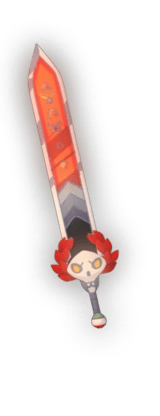
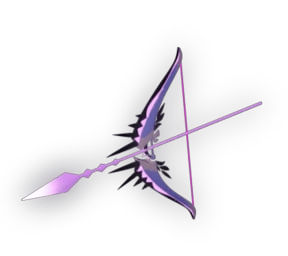
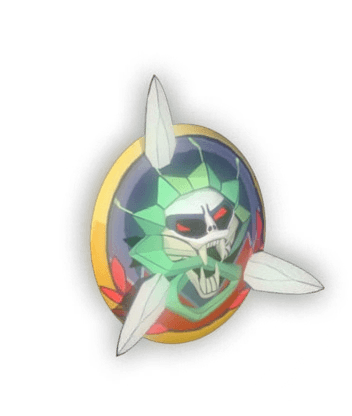
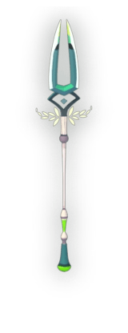
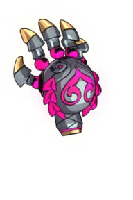
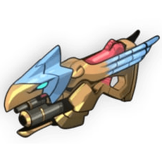

Weapons
The weapons Zagreus uses are known as the infernal arms. They are his main way of attacking and can be unlocked using Cthonic Keys. They can be upgraded temporarily using Daedalus's Hammer (can be found throughout the Underworld). To Upgrade them permantely you have to use titan blood which can be found by defeating bosses.
List of the Infernal arms
Stygius (Stygian Blade)
A long sword. The first weapon Zagreus can use on his journey to escape Hades.
Coronacht (Heart-seeking bow)
A bow that lets Zagreus use long-range attacks.
Aegis (Shield of Chaos)
A shield that can be used for bashing enemies and can defend against almost every kind of attack.
Varatha (Eternal Spear)
A spear that can deliver long-range attacks repeatedly.
Malphon (Twin Fists of Malphon)
This weapon allows Zagreus to use combos at close range.
Exagryph (Adamant Rail)
Like the bow, it is a long-range weapon, but it must be reloaded.